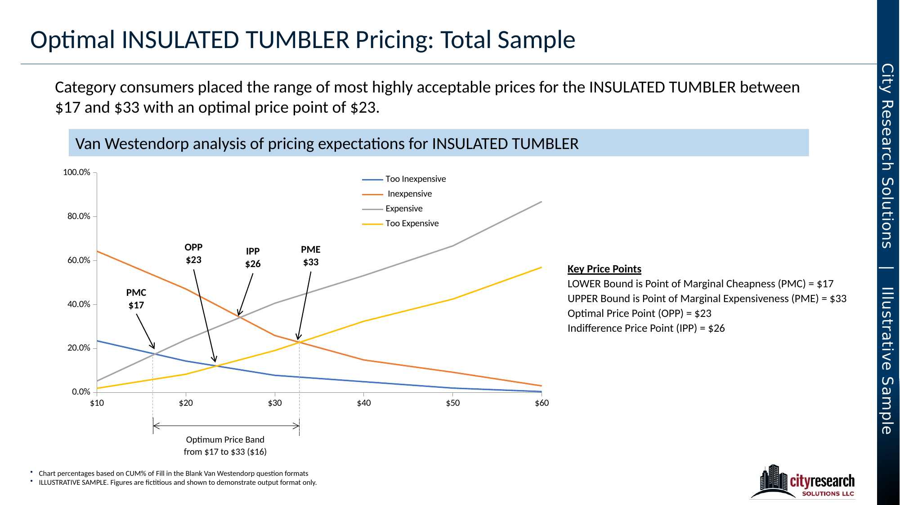
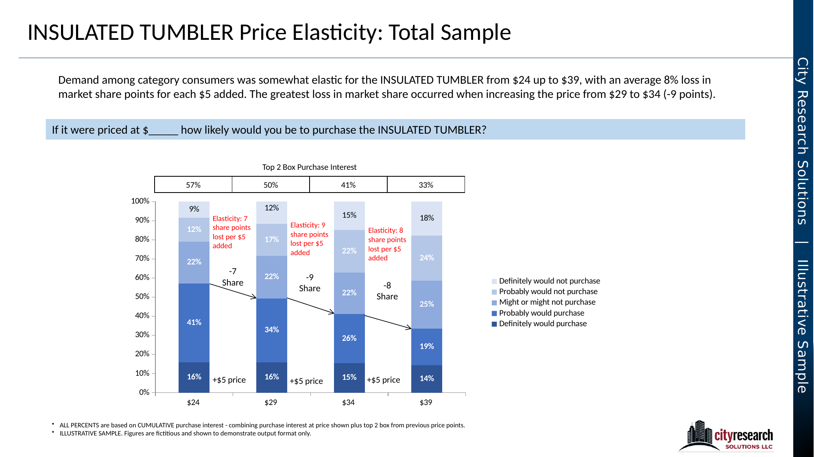
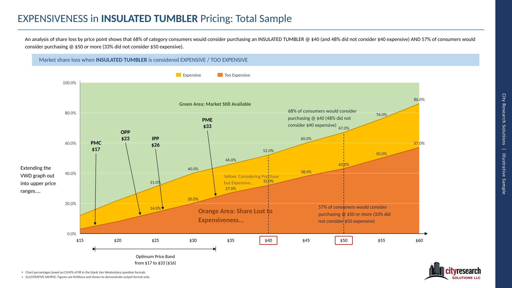
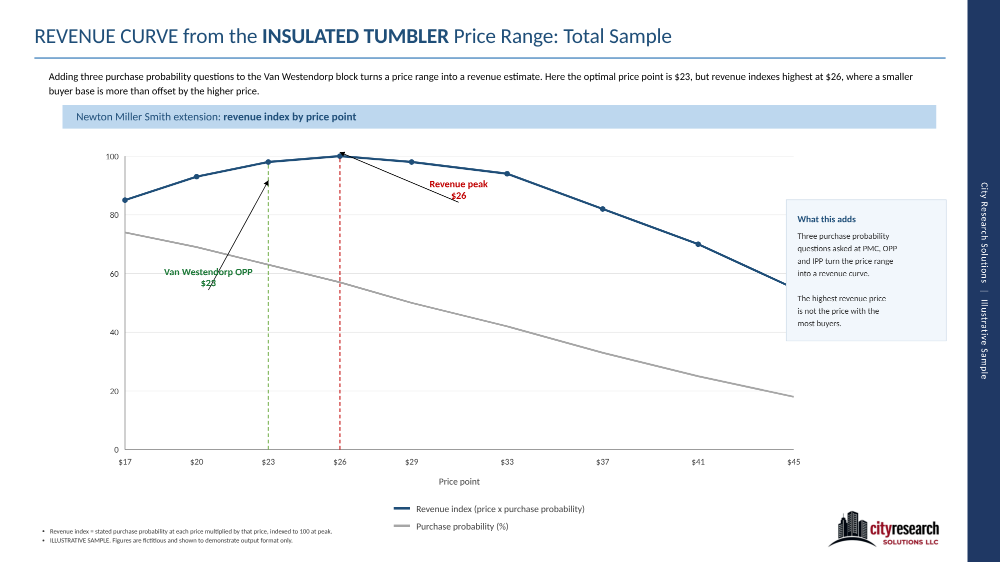
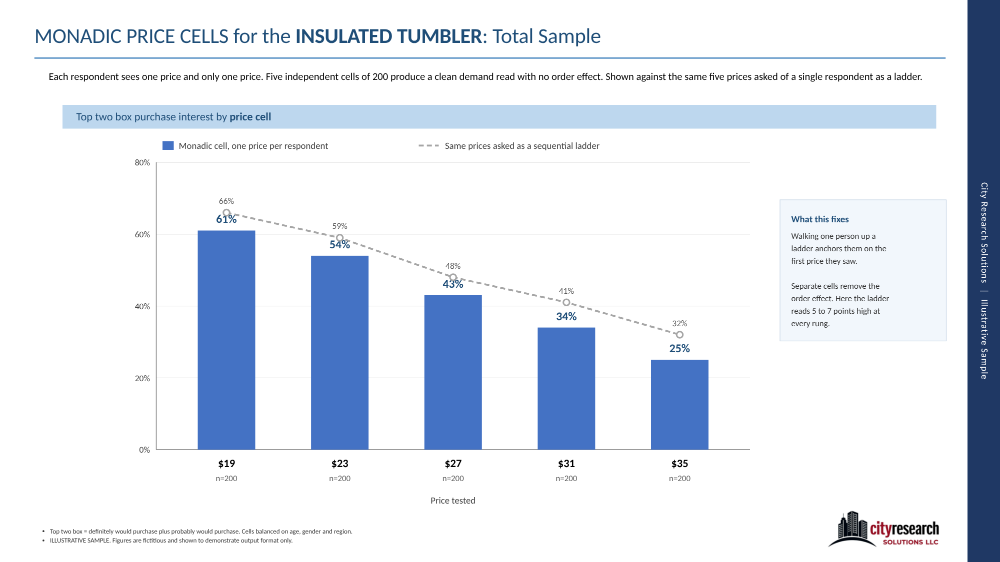
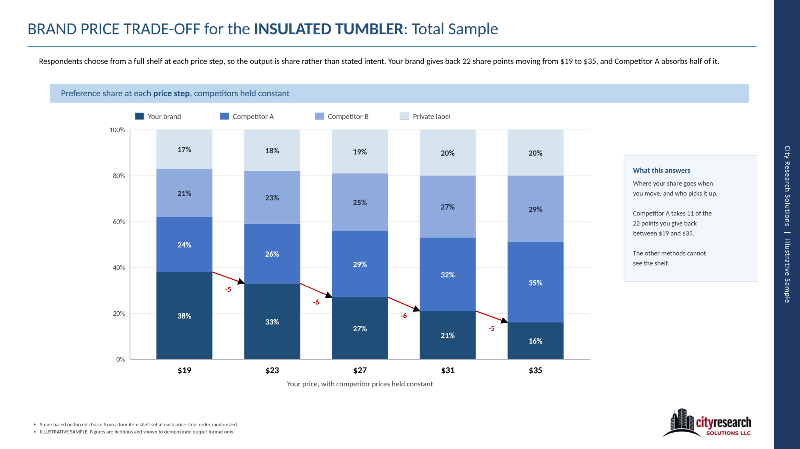

Pricing gets treated as one question, so people pick one method and stop. The two methods we run most often answer different questions, and the useful work happens when they run in sequence.
Bracket with Van Westendorp
Four open ended price questions, plotted against each other, give a floor, a ceiling and the point where the fewest people object. That tells you the range worth testing. It does not tell you what happens at any single price.

Pick with Gabor Granger
A price ladder, one rung at a time, with purchase interest recorded at each price. Run inside the Van Westendorp band, it gives you a demand curve and shows what each added dollar costs in share. You stop spending rungs on prices nobody was going to accept.

Extend the curves past the band
The Van Westendorp data holds more than the acceptable range. Carry the expensive and too expensive curves into the upper price points and you can read how much of the market you give up at prices you were not planning to test, and how much is still there to win.

Where both methods go blind
Van Westendorp and Gabor Granger share a blind spot. Both ask about one product in isolation, with no competitor on the shelf and no feature trade off. People answer honestly. They just answer in a vacuum. Three methods we would like to see used more often close that gap.
Newton Miller Smith
Three purchase probability questions added to the Van Westendorp block turn the price range into a revenue curve. It costs almost nothing to add, and it often changes which end of the band you should argue for.

Monadic price cells
One price per respondent instead of one respondent walked up a ladder. It takes more sample, and it removes the anchoring that comes from asking the same person about five prices in a row.

Brand price trade off
Your price on a shelf next to real competitors, with prices moving. It is the only method in the set that answers what happens when the competition reacts, which is usually the question the room actually cares about.

Bracket, pick, then stress test
Most pricing work stops after the first two steps. The figures above show what each step returns. All of them are illustrative: the concept is invented and every figure is fictitious, shown to demonstrate the output format only.